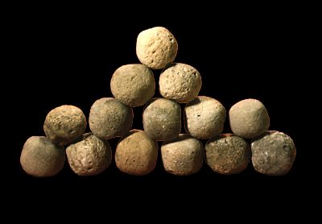

The Challenge -
Sling stones

Before the development of gunpowder around AD 900, missiles were thrown by hand or later by catapult. An important missile in ancient armies was the sling stone. These examples were found at Lachish (in modern Israel) where they had been used during the siege and capture of the city by Assyrian soldiers in 701 B.C.
To learn more about weapons visit the Warfare Story.
|
|